Criminal control of water and urban form in Mexico City's eastern periphery
Natalia García Minor · Advisor: Magda Maaoui · Work in progress, fall 2026
In the east of the metropolitan area, water reaches many homes through wells, trucks and valves that someone else controls. In 2025 the Estado de México prosecutor dismantled a network that ran pipas out of public wells across 13 municipalities.
This thesis asks what that control leaves in the city: which blocks stay unpiped, how streets bend to trucks, how houses store water.
13municipalities in the water-theft network
322water trucks (pipas) seized
189properties intervened · Operación Caudal, 2025
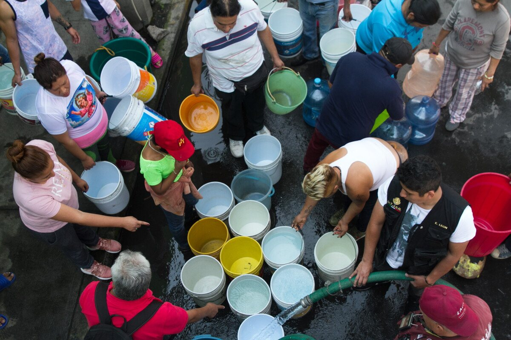
When the network fails, water is shared out by hose, bucket by bucket. Photo: [add credit]
Part 1The eastEl oriente
From 13 municipalities to one cluster
The region is the 13 Estado de México municipalities named in Operación Caudal: one state, one prosecutor, one legal framework for municipal water operators.
The study focuses on Chalco, Valle de Chalco and Ixtapaluca, where the prosecutor's evidence is strongest. Iztapalapa, across the border, is the contrast: there one city agency, SACMEX, runs the water.
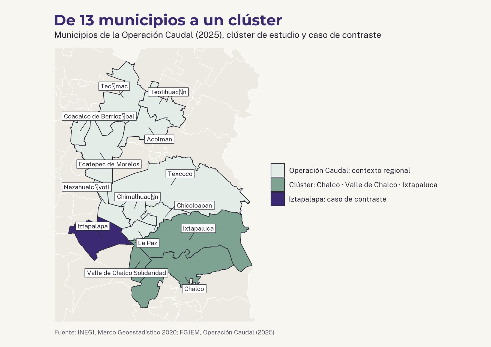
Almost every house stores water
In most urban blocks, the 2020 census records a tinaco on the roof of most homes. Nearly every home has a pipe, yet almost all of them store water. Storage is the first trace: households hold water because it does not arrive when they need it.
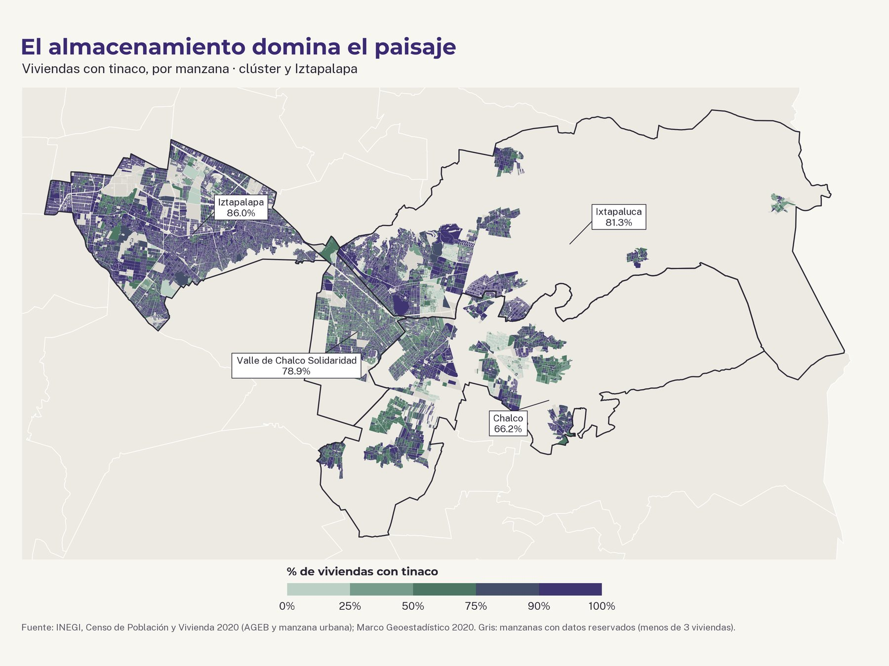
Cisterns mark where supply is least reliable
Cisterns vary more than tinacos. They are a larger investment, so where they cluster is a working hypothesis for where households expect long gaps between deliveries or buy water by the truckload.
Grey blocks: values withheld by INEGI (fewer than three dwellings).
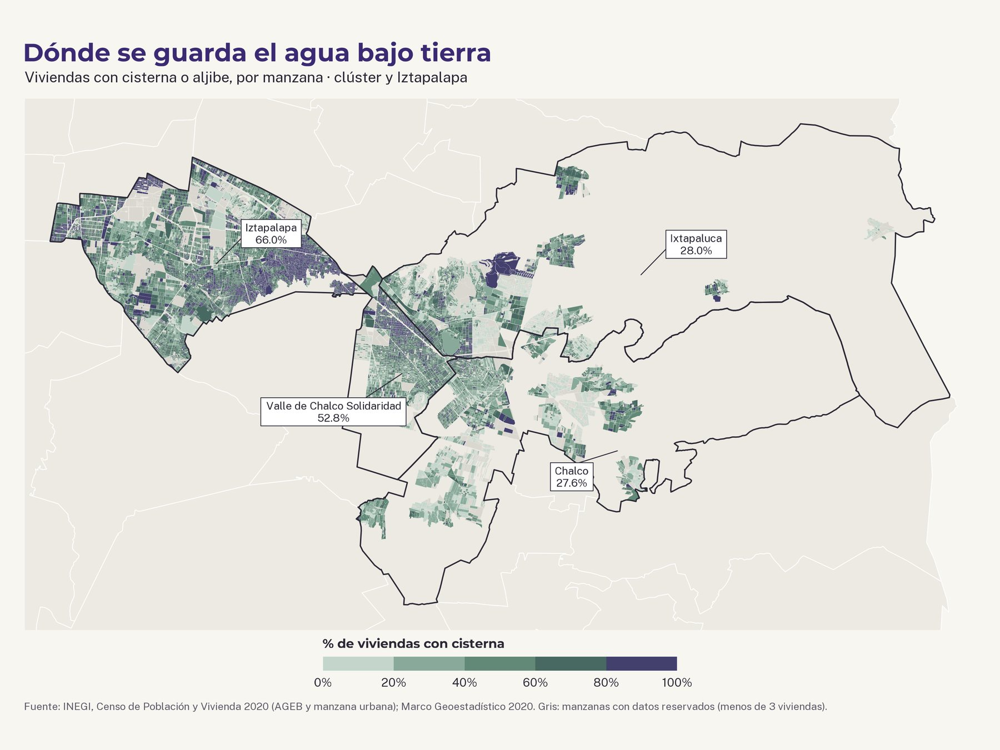
Municipalities named in Operación Caudal, the study cluster and the contrast case. INEGI Marco Geoestadístico 2020.
Part 2FrameworkMarco conceptual
Political scientists describe criminal groups as rulers, not only as violent actors. They extract rents, provide services the state fails to deliver, and decide who enters and uses space. This thesis claims that each of these mechanisms leaves a trace a planner can read.
Water is where the framework is tested, because its traces are the clearest. Commerce and land come in only where they meet water.
MechanismWhat it acts onTrace in the urban fabric
Extraction
extorsión · cobro de piso
→
Markets, shops, transport, water trucks
→
Closed or relocated businesses, new market layouts, shifted routes
Provision
venta de servicios
→
Water, security, dispute resolution
→
Informal water points, storage tanks, private delivery routes
Gatekeeping
control de acceso
→
Land, streets, public space
→
Irregular occupation, barriers and closures, unused public space
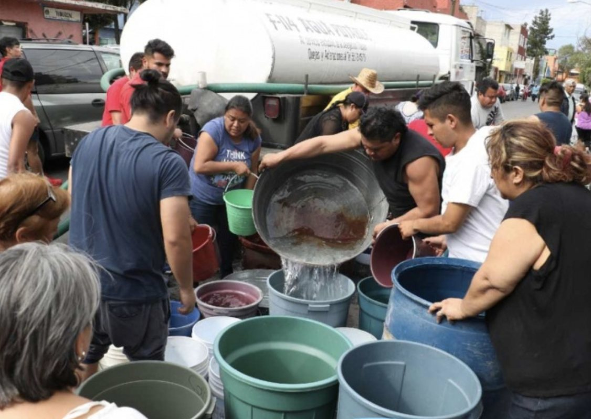
A pipa marked "agua potable" fills barrels on the street. Who controls the truck decides who gets water. Photo: [add credit]
Part 3Where the water comes fromPrimeros resultados
1 in 5
homes in Chalco get water outside the public service
In Chalco, 20.9% of homes draw water from a well, a truck, another house or the rain. In Ixtapaluca it is 15.4%. In Iztapalapa, under SACMEX, it is under 1%.
Census 2020 sample (cuestionario ampliado), weighted with the sample design. Representative by municipality, not by block.
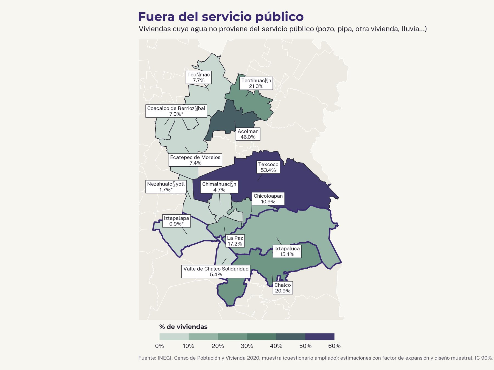
Who depends on the pipa
Pipa dependence is highest in Acolman (22%), Texcoco (17%) and La Paz (12%). In the cluster, Chalco stands out at about 10%.
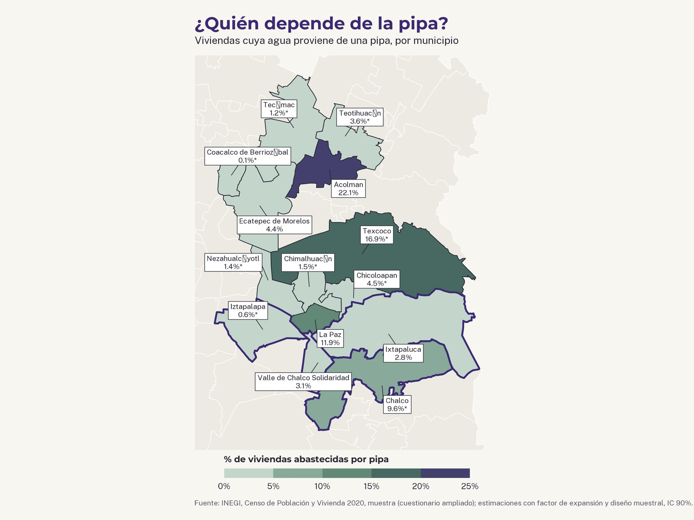
Read with care
The intervals are wide
Chalco's estimate is 9.6%, but its interval runs from about 3% to 16%. The ranking shows the pattern; the exact numbers need the fieldwork and the administrative records to confirm.
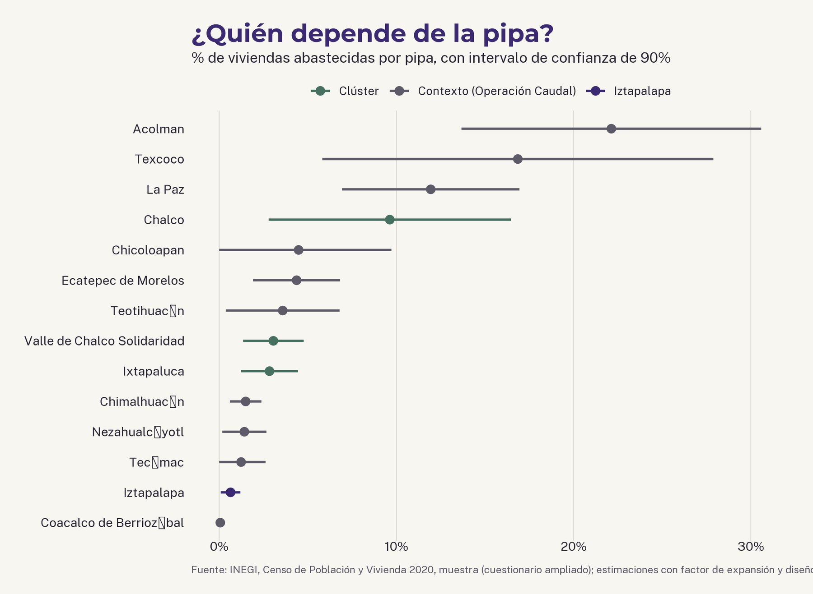
Two regimes, two ways of coping
In Iztapalapa, 71% of homes have a pump: they wait for the network and push water up when it comes. In Chalco and Ixtapaluca, fewer than one in three do. There, more water arrives from outside the network altogether.
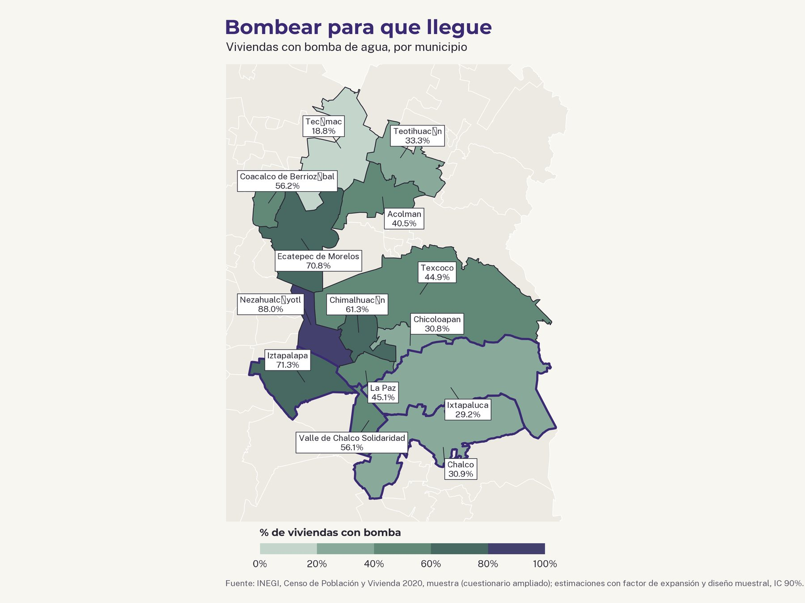
Share of dwellings whose water does not come from the public service. INEGI, Censo 2020 sample, municipal estimates.
Cluster and contrast · % of occupied dwellings · Censo 2020 sample
Municipality
Outside public service
Supplied by pipa
Water only in yard or none
Water pump
Chalco
20.9
9.6
34.2
30.9
Ixtapaluca
15.4
2.8
25.8
29.2
Valle de Chalco Solidaridad
5.4
3.1
52.0
56.1
Iztapalapa (contrast)
0.9
0.6
16.7
71.3
* Low precision (coefficient of variation of 30% or more). Estimates use the census sample weights, strata and primary sampling units.
Part 4MethodTriangulación
Criminal control is hard to see directly, so no single source decides a finding. Each node of the water system is read through at least two independent kinds of evidence, and each trace is labeled with how firm it is.
01
Source
pozo municipal
Caudal recordsCONAGUA well registryPress coverage
02
Filling point
punto de llenado
Caudal recordsPress coverageInterviews
03
Pipa route
ruta de pipa
Press coverageStreet View, aerialsInterviews
04
Household
tinaco, cisterna
Census: storage by blockCensus sample: pipaSite visits
Documented · prosecutor, courtReported · two or more press sourcesDescribed · interviews, site visitsPublic data · census, imagery
Simulated data
Four layers over the same ground
Public data, prosecutor records, press reports and interviews are mapped separately over the cluster's urban AGEBs. Here only the census layer is real; the other three show how the method will work.
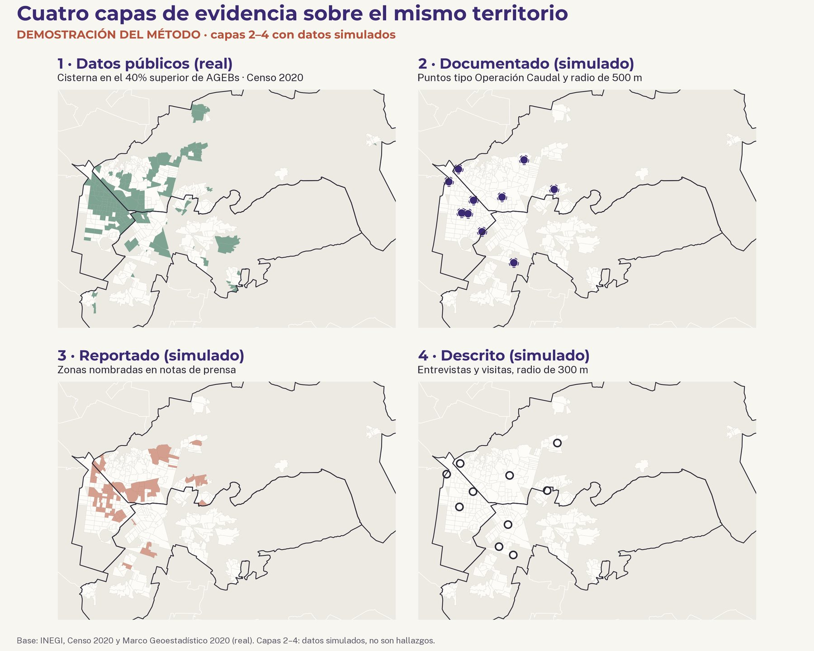
Simulated data
Where the layers agree, a trace holds
Each layer that agrees on an area adds one point. One source is a lead; three or four make a solid trace. The areas that score highest become candidates for the case colonias.
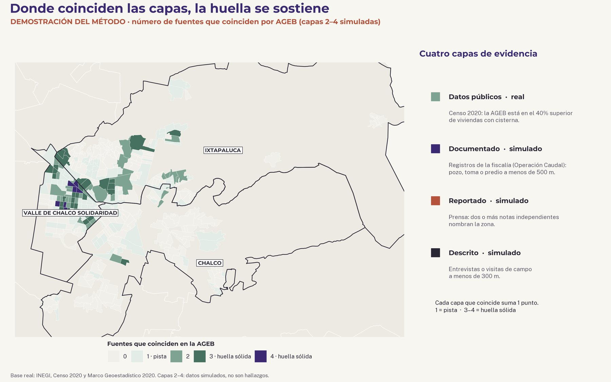
Demonstration. Layer 1 is real (Censo 2020); layers 2–4 are simulated to show the method.
Part 5Question and planPregunta y calendario
How is criminal control of water systems expressed in the urban fabric of Mexico City's eastern periphery?
Criminal control: a criminal organization, or actors acting for one, sets rules, extracts payment, provides a service or controls access at a node of a water system. The colonia is the case; the water systems inside it are the unit of analysis.
Core, in depth
Criminal activity at each node of the water system, in two colonias
Spatial traces at three scales: neighborhood, street, lot
Context, light
Settlement-and-network timeline from existing records
Regional mapping of public data, 13 municipalities
Iztapalapa: one colonia, an illustrative contrast
Out of scope
Archival history of how networks were built
Land-market analysis
Commerce and mobility beyond water
OctNovDecJanFebMarAprMay
FrameworkLiterature, map, sites, IRB
PrepareProtocols, contacts
FieldworkInterviews, site visits
AnalysisMapping, coding
Plan B, if no-go in OctoberDocuments, remote interviews, imagery
WritingDrafts, final drawings
SubmitMay 13
Oct 16 · Mid-term reviewEnd of October · fieldwork go / no-goEnd of November · Plan A/B sites, IRB submittedMay 13, 2027 · final review
IntroductionWho governs the city?
FrameworkRule that leaves traces
Region and networksThe 13 municipalities and how the networks were built
Case studiesTwo colonias: activity by node, traces at three scales
Contrast: IztapalapaOne colonia where SACMEX runs the water
Practice and conclusionWhich public investments are at risk of capture
AboutData and notesDatos y notas
Data
INEGI, Censo de Población y Vivienda 2020: results by AGEB and urban block (storage, piped water).
INEGI, Censo 2020 sample (cuestionario ampliado), Viviendas table: water source, pipa supply, pump. Estimates weighted with the sample design, 90% confidence intervals.
INEGI, Marco Geoestadístico, Censo 2020 edition.
Estado de México prosecutor (FGJEM), Operación Caudal, 2025, through press coverage (La Jornada; Semanario ZETA).
Notes
This is a work-in-progress thesis site. The maps in Part 3 are first results from public data. The maps in Part 4 are a demonstration: their prosecutor, press and interview layers are simulated and are not findings.
The 2020 census did not ask how often water arrives, so frequency of supply will come from administrative records and fieldwork.
Fieldwork will record no names or identifying details, and findings will be mapped at a resolution that cannot point to a person or a house.
Stained Water Systems
Tesis MUP · Harvard GSD · Periferia oriente de la Ciudad de México
Stained Water Systems
Control criminal del agua y forma urbana en la periferia oriente de la Ciudad de México
Natalia García Minor · Asesora: Magda Maaoui · Trabajo en curso, otoño 2026
En el oriente de la zona metropolitana, el agua llega a muchas casas por pozos, pipas y válvulas que controla alguien más. En 2025, la Fiscalía del Estado de México desarticuló una red que operaba pipas desde pozos públicos en 13 municipios.
Esta tesis pregunta qué deja ese control en la ciudad: qué manzanas se quedan sin red, cómo las calles se acomodan a las pipas, cómo las casas guardan el agua.
Cuando la red falla, el agua se reparte con manguera, cubeta por cubeta. Foto: [agregar crédito]
Parte 1El orienteThe east
De 13 municipios a un clúster
La región son los 13 municipios del Estado de México que nombra la Operación Caudal: un estado, una fiscalía y un mismo marco legal para los organismos municipales de agua.
El estudio se concentra en Chalco, Valle de Chalco e Ixtapaluca, donde la evidencia de la fiscalía es más sólida. Iztapalapa, del otro lado del límite, es el contraste: ahí una sola agencia de la ciudad, SACMEX, administra el agua.
Casi todas las casas guardan agua
En la mayoría de las manzanas urbanas, el Censo 2020 registra tinaco en casi todas las casas. Casi todas tienen tubo, y aun así casi todas almacenan agua. El almacenamiento es la primera huella: las familias guardan agua porque no llega cuando la necesitan.
Las cisternas marcan dónde el servicio es menos confiable
Las cisternas varían más que los tinacos. Son una inversión mayor, así que donde se concentran es una hipótesis de trabajo sobre dónde las familias esperan largos periodos sin agua o la compran por pipa.
Manzanas en gris: INEGI reserva los datos (menos de tres viviendas).
Municipios de la Operación Caudal, clúster de estudio y caso de contraste. INEGI, Marco Geoestadístico 2020.
Parte 2Marco conceptualFramework
La ciencia política describe a los grupos criminales como formas de gobierno, no solo como actores violentos. Cobran rentas, venden servicios que el Estado no da y deciden quién entra y usa el espacio. Esta tesis plantea que cada uno de esos mecanismos deja una huella que un planeador puede leer.
El agua es donde se pone a prueba el marco, porque sus huellas son las más claras. El comercio y el suelo entran solo donde se cruzan con el agua.
MecanismoSobre qué actúaHuella en el tejido urbano
Extracción
extorsión · cobro de piso
→
Mercados, comercios, transporte, pipas
→
Negocios cerrados o reubicados, mercados reorganizados, rutas que cambian
Provisión
venta de servicios
→
Agua, seguridad, resolución de conflictos
→
Tomas informales, tanques de almacenamiento, rutas privadas de reparto
Control de acceso
quién entra y quién usa
→
Suelo, calles, espacio público
→
Ocupación irregular, bardas y cierres, espacio público sin uso
Una pipa de "agua potable" llena tambos en la calle. Quien controla la pipa decide quién recibe agua. Foto: [agregar crédito]
Parte 3De dónde viene el aguaFirst findings
1 de cada 5
casas en Chalco obtienen el agua fuera del servicio público
En Chalco, 20.9% de las viviendas obtiene el agua de un pozo, una pipa, otra vivienda o la lluvia. En Ixtapaluca, 15.4%. En Iztapalapa, con SACMEX, menos de 1%.
Muestra del Censo 2020 (cuestionario ampliado), ponderada con el diseño muestral. Representativa por municipio, no por manzana.
¿Quién depende de la pipa?
La dependencia de la pipa es más alta en Acolman (22%), Texcoco (17%) y La Paz (12%). En el clúster destaca Chalco, con cerca de 10%.
Leer con cuidado
Los intervalos son amplios
La estimación para Chalco es 9.6%, pero su intervalo va de cerca de 3% a 16%. El ranking muestra el patrón; las cifras exactas necesitan el trabajo de campo y los registros administrativos para confirmarse.
Dos regímenes, dos formas de arreglárselas
En Iztapalapa, 71% de las casas tiene bomba: esperan a la red y suben el agua cuando llega. En Chalco e Ixtapaluca, menos de una de cada tres. Ahí, más agua llega desde fuera de la red.
Viviendas cuya agua no proviene del servicio público. INEGI, muestra del Censo 2020, estimaciones municipales.
Clúster y contraste · % de viviendas habitadas · muestra del Censo 2020
Municipio
Fuera del servicio público
Abastecida por pipa
Agua solo en el patio o sin agua
Con bomba de agua
Chalco
20.9
9.6
34.2
30.9
Ixtapaluca
15.4
2.8
25.8
29.2
Valle de Chalco Solidaridad
5.4
3.1
52.0
56.1
Iztapalapa (contraste)
0.9
0.6
16.7
71.3
* Precisión baja (coeficiente de variación de 30% o más). Las estimaciones usan los factores de expansión, estratos y unidades primarias de muestreo del Censo.
Parte 4MétodoTriangulation
El control criminal es difícil de ver directamente, así que ninguna fuente decide un hallazgo por sí sola. Cada eslabón del sistema de agua se lee con al menos dos tipos de evidencia independientes, y cada huella lleva una etiqueta de qué tan firme es.
01
Fuente
pozo municipal
Registros de la Operación CaudalRegistro de pozos de CONAGUANotas de prensa
02
Punto de llenado
donde cargan las pipas
Registros de la Operación CaudalNotas de prensaEntrevistas
03
Ruta de la pipa
recorrido de reparto
Notas de prensaStreet View, imágenes aéreasEntrevistas
04
Vivienda
tinaco, cisterna
Censo: almacenamiento por manzanaMuestra del Censo: pipaVisitas de campo
Documentado · fiscalía, tribunalesReportado · dos o más notas de prensaDescrito · entrevistas, visitas de campoDatos públicos · censo, imágenes
Datos simulados
Cuatro capas sobre el mismo territorio
Datos públicos, registros de la fiscalía, notas de prensa y entrevistas se mapean por separado sobre las AGEBs urbanas del clúster. Aquí solo la capa del Censo es real; las otras tres muestran cómo va a funcionar el método.
Datos simulados
Donde coinciden las capas, la huella se sostiene
Cada capa que coincide en una zona suma un punto. Una fuente es una pista; tres o cuatro son una huella sólida. Las zonas con más puntos se vuelven candidatas para las colonias de estudio.
Demostración. La capa 1 es real (Censo 2020); las capas 2 a 4 son simuladas para mostrar el método.
Parte 5Pregunta y planQuestion and plan
¿Cómo se expresa el control criminal de los sistemas de agua en el tejido urbano de la periferia oriente de la Ciudad de México?
Control criminal: una organización criminal, o actores que actúan por ella, impone reglas, cobra, provee un servicio o controla el acceso en algún eslabón de un sistema de agua. La colonia es el caso; los sistemas de agua dentro de ella son la unidad de análisis.
Núcleo, a fondo
Actividad criminal en cada eslabón del sistema de agua, en dos colonias
Huellas espaciales en tres escalas: colonia, calle, lote
Contexto, ligero
Cronología de poblamiento y redes con registros existentes
Mapeo regional con datos públicos, 13 municipios
Iztapalapa: una colonia, contraste ilustrativo
Fuera del alcance
Historia de archivo de cómo se construyeron las redes
Análisis del mercado de suelo
Comercio y movilidad más allá del agua
OctNovDicEneFebMarAbrMay
MarcoLiteratura, mapa, sitios, IRB
PreparaciónProtocolos, contactos
Trabajo de campoEntrevistas, visitas
AnálisisMapeo, codificación
Plan B, si en octubre no hay campoDocumentos, entrevistas a distancia, imágenes
EscrituraBorradores, dibujos finales
Entrega13 de mayo
16 oct · revisión de medio términoFin de octubre · decisión sobre trabajo de campoFin de noviembre · sitios Plan A/B, IRB enviado13 de mayo de 2027 · revisión final
Introducción¿Quién gobierna la ciudad?
Marco conceptualUn gobierno que deja huellas
Región y redesLos 13 municipios y cómo se construyeron las redes
Casos de estudioDos colonias: actividad por eslabón, huellas en tres escalas
Contraste: IztapalapaUna colonia donde SACMEX administra el agua
Práctica y conclusiónQué inversiones públicas corren riesgo de ser capturadas
AcercaDatos y notasData and notes
Datos
INEGI, Censo de Población y Vivienda 2020: resultados por AGEB y manzana urbana (almacenamiento, agua entubada).
INEGI, muestra del Censo 2020 (cuestionario ampliado), tabla de Viviendas: fuente del agua, abastecimiento por pipa, bomba. Estimaciones ponderadas con el diseño muestral, intervalos de confianza de 90%.
INEGI, Marco Geoestadístico, edición del Censo 2020.
Fiscalía General de Justicia del Estado de México (FGJEM), Operación Caudal, 2025, a través de la prensa (La Jornada; Semanario ZETA).
Notas
Este es el sitio de una tesis en curso. Los mapas de la Parte 3 son primeros resultados con datos públicos. Los mapas de la Parte 4 son una demostración: sus capas de fiscalía, prensa y entrevistas son simuladas y no son hallazgos.
El Censo 2020 no preguntó cada cuándo llega el agua, así que la frecuencia del servicio vendrá de registros administrativos y del trabajo de campo.
El trabajo de campo no registrará nombres ni datos que identifiquen a las personas, y los hallazgos se mapearán a una escala que no permita señalar a una persona o una casa.